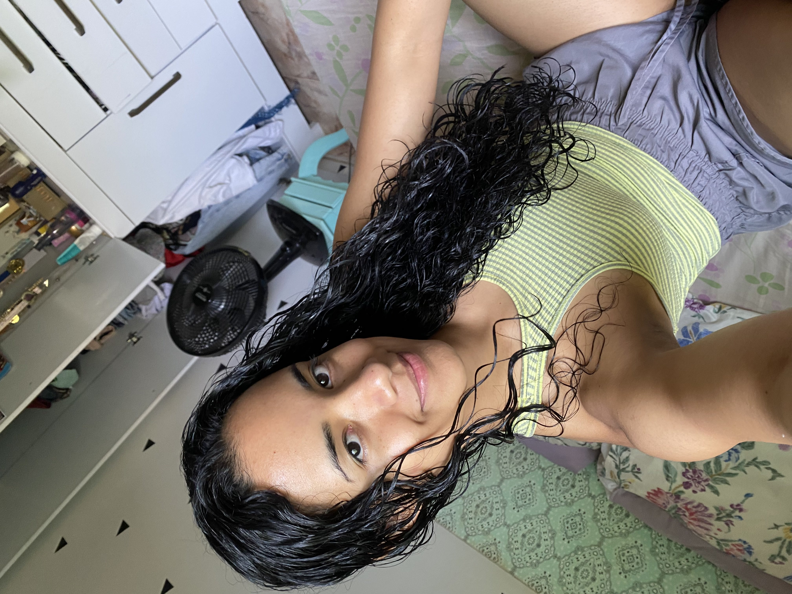
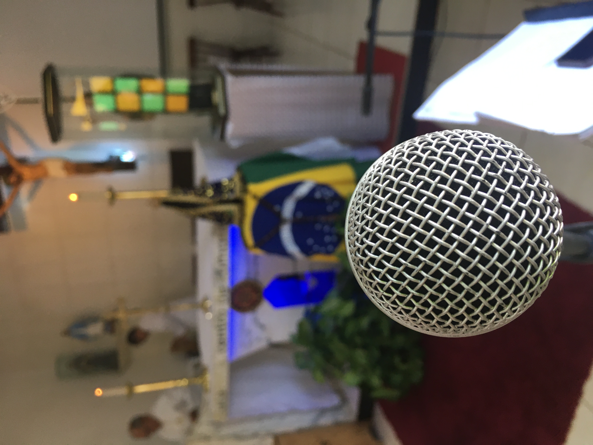

Propósito da Página
O principal objetivo desta página é desenvolver minhas habilidades como web designer, ao mesmo tempo em que crio um espaço acessível na internet dedicado à Igreja Católica. Como catequista, acredito que ter um recurso online rico em conteúdo pode ser extremamente valioso, tanto para meu crescimento pessoal quanto para a formação de outros.
Neste ambiente virtual, pretendo compartilhar informações sobre a doutrina, os ensinamentos e as tradições da Igreja, facilitando o acesso a materiais que podem enriquecer a experiência de fé de muitos. Acredito que, ao combinar o aprendizado de design com a criação de conteúdo significativo, poderei contribuir para a evangelização e o aprofundamento espiritual de outras pessoas.
Essa iniciativa não só me permitirá aprimorar minhas competências técnicas, mas também servirá como uma ferramenta de apoio para quem busca compreender melhor a fé católica. Espero que este projeto inspire outros a explorarem e se engajarem mais profundamente na sua jornada de fé.
Desde pequena, cresci em um lar onde a fé católica sempre foi um valor central. Meus pais foram os grandes responsáveis por me transmitir essa crença, e eu sempre tive a oportunidade de vivenciar momentos significativos dentro da igreja. Meu pai, sempre presente no ministério de música, tocava frequentemente durante as missas e celebrações e isso me encantava.
Além disso, vi meus pais participando ativamente de grupos jovens, o que despertou em mim um desejo de me envolver com a comunidade. Essa vivência me ensinou o valor do serviço e do amor ao próximo.
Aos 15 anos, ingressei no ministério de música junto com meu pai, o que me proporcionou não apenas a alegria de tocar, mas também a experiência de contribuir nas celebrações e Eucaristias na paróquia. Essa trajetória me trouxe um desejo de aprofundar ainda mais minha relação com Deus e com minha comunidade.
No ano passado (2023), senti um novo chamado em meu coração: o de me tornar catequista. Essa decisão foi um passo natural na minha jornada de fé, pois percebi que poderia compartilhar o que aprendi e ajudar outras pessoas a conhecerem mais sobre a Igreja e a vivenciarem a sua fé de forma mais profunda. Estou animada para servir com amor e dedicação, continuando a tradição que recebi de meus pais.


 